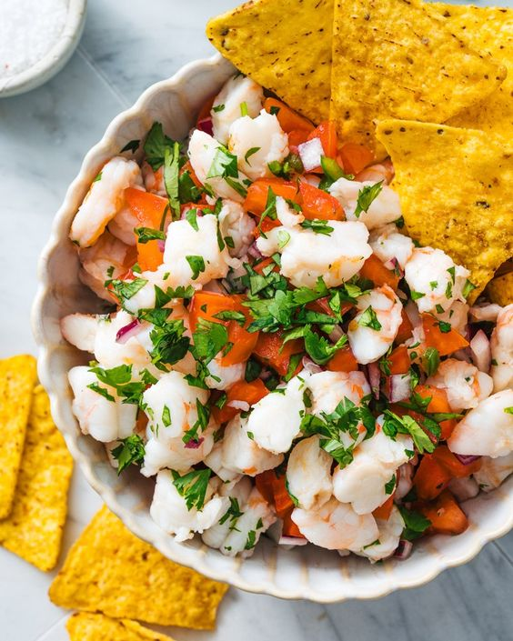

Ingredients
Here are the ingredients to prepare shrimp ceviche.
300 g of cooked and peeled shrimp
2 limes
1 red onion
1 tomato
Fresh coriander
1 avocado
Salt, pepper
Steps

Steps
Follow these steps to prepare your dish.
Cut the shrimp into pieces. Squeeze the juice from the limes.
Chop the onion, tomato, and coriander.
Mix all the ingredients in a bowl, adding salt and pepper.
Let marinate in the refrigerator for 20 minutes. Serve cold with avocado slices.